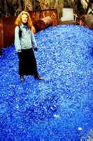
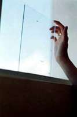
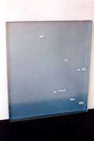
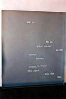
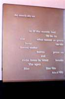
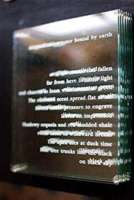
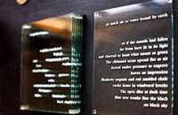
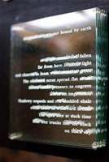
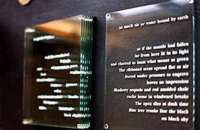

Notes on the making of the glass book
by Laurie Price
(Click on images to see larger views)
In the early 1980s I dreamed of a glass book. I never thought about trying to actually fabricate one it seemed impossible, and I was very much charmed by its seeming impossibility. It was one of its most magnetic qualities. Id created a conceptual book. A book that I was drawn to think about and imagine from time to time, even occasionally mentioning it or discussing it within the circle of friends I had, most of whom were photographers or painters. In my dream the book consisted of a stack of glass pages with text sandblasted onto them. The book resembled a cube of ice into which some letters and words seemed to be incised all the way through, and I visualized that when the pages of the book were turned, parts of the text transformed, or disappeared.
A few months before I went to Oaxaca, Mexico for the first time, I wrote instructions to myself in my notebook about how to write the "book":
the glass book Ive been thinking about for 12 years is a poem written back to front, each page bearing an addition of words that will add up to the beginning (book closed) "full" poem <light plus light equals light>
After receiving a one-year grant for poetry from the Gerbode Foundation in 1993 I moved to Oaxaca, Mexico. I began to compose the poem, not back to front, but paying close attention to how the words accumulated & could be divided, & whether or not there would appear to be enough of a shift in weight and image if letters or parts of words or phrases were taken away. I wrote a lot; I scrapped a lot of that writing. The poem finally came.
In retrospect, it echoes my journey from San Francisco to my arrival in Oaxaca. The book begins with the full poem on its top page, a "description" of a dense landscape, which with the turn of pages loses mass and weight, loses cragginess and darkness, until only the words "air air wind sky" are spread out across the glass page. I had dreamed of a poem as a glass book, a transparent object made of text, frozen onto/into its pages through which one could view the external world, in constant motion, passing, and through which the world, in constant motion, could enter. Id dreamed of it as being a way of entering an indefinite place through language that appears and disappears, mirroring its own poetic process. Upon reaching the final page the book no longer exists, except as a filter.
Making the book was pure exploration. My first prototypes were hilarious failures. I was not interested in fabricating a prototype from acetate or plexiglass because plastic has no qualities, and scratches easily. My first attempt consisted of trying to apply black rub-on type, letter by letter, with a burnishing tool. This was painstaking work and took hours. When I finally got to the 2nd line some of the letters from the 1st line began to slide off the glass page. This made me delirious, and I thought of the Berrigan / Hollo joke about "words sliding off the page."
I
enlisted the help of a friend and graphic artist who lives in Oaxaca and
asked him to make a computer-generated silkscreen for printing the glass.
We agreed that the best way to do it was to work backwards consequently
each "page" would be silkscreened from  underneath.
This would allow the glass surface to have more of a visual impact even
from the top page. Also, each page had to be screened with the full poem
so that the spacing wouldnt change from one page to the next, despite
parts of the text disappearing. We decided on a typeface and using flush-right
instead of flush-left margins, so that the shape of the text remaining
on each page would be visually more balanced. After the glass had been
silkscreened we fashioned "word-removal tools"
from wooden sticks with which we could remove words or parts of words
from subsequent pages. Then each completed page had to be baked in an
oven to render the ink permanent. Each step of this project involved language,
from inception to completion, from the writing of the poem to my self-induced
crash course on how to communicate what I needed, in Spanish, and at times
in a more technically oriented Spanish. Even sitting around the table
scratching off letters and removing words and the amazing conversation
that ensued around those concepts became an integral component of the
glass book. We were both completely exhilarated with each finished page.
The lamplight over the table where we worked performed magic, refracting
through the finished stack and bouncing off its glass edges. And something
else happened: with the handling of the glass, the book took on other
qualities reflections and areas that resembled oil slicks. The oils
from our fingertips actually
"scattered" the light, and instead of light passing through
darkness, darkness passes through light, and in that process, colors are
produced. The entire making of the book involved what I felt was the ultimate
synthesis of language, philosophy and art, each of which was addressed
in both Spanish and English, and all of which seemed to wholly represent
the accumulation of many ideas and moments leading up to and including
that elusive continuous present.
underneath.
This would allow the glass surface to have more of a visual impact even
from the top page. Also, each page had to be screened with the full poem
so that the spacing wouldnt change from one page to the next, despite
parts of the text disappearing. We decided on a typeface and using flush-right
instead of flush-left margins, so that the shape of the text remaining
on each page would be visually more balanced. After the glass had been
silkscreened we fashioned "word-removal tools"
from wooden sticks with which we could remove words or parts of words
from subsequent pages. Then each completed page had to be baked in an
oven to render the ink permanent. Each step of this project involved language,
from inception to completion, from the writing of the poem to my self-induced
crash course on how to communicate what I needed, in Spanish, and at times
in a more technically oriented Spanish. Even sitting around the table
scratching off letters and removing words and the amazing conversation
that ensued around those concepts became an integral component of the
glass book. We were both completely exhilarated with each finished page.
The lamplight over the table where we worked performed magic, refracting
through the finished stack and bouncing off its glass edges. And something
else happened: with the handling of the glass, the book took on other
qualities reflections and areas that resembled oil slicks. The oils
from our fingertips actually
"scattered" the light, and instead of light passing through
darkness, darkness passes through light, and in that process, colors are
produced. The entire making of the book involved what I felt was the ultimate
synthesis of language, philosophy and art, each of which was addressed
in both Spanish and English, and all of which seemed to wholly represent
the accumulation of many ideas and moments leading up to and including
that elusive continuous present.
BIO: Thanks to a 1993 Gerbode Foundation Award in Poetry, Laurie Price moved from San Francisco to Oaxaca, Mexico where she wrote and worked on a series of 'literary art objects.' The glass book is one of these pieces and that series, shown as part of a 3-person exhibit, "De Dentro Hacia Afuera (Inside Out)", in Mexico City in 1995. Her publications include Going on Like This (Northern Lights Int'l./ Brooklyn Series, 1991), Except for Memory (Pantograph Press, 1993) and Under the Sign of the House (Detour Press, 1998). Her work has appeared in Arshile, Big Allis, Black Bread, How2, New American Writing, readme, XCP and other small press journals and online magazines. A chapbook entitled The Assets, will be out later this year from Situations press.